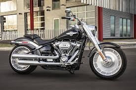

Últimas Entradas
Kawasaki Ninja H2R

La Kawasaki Ninja H2R es una de las motocicletas más potentes y avanzadas del mundo. Con un motor sobrealimentado de 998 cc, esta máquina ofrece una experiencia de conducción extrema y un rendimiento incomparable. Es famosa no solo por su velocidad, sino también por su tecnología de vanguardia y diseño aerodinámico.
La H2R es capaz de alcanzar más de 300 km/h, gracias a su potencia de más de 300 caballos de fuerza. Su chasis está diseñado para una estabilidad excepcional, incluso a altas velocidades, y cuenta con un sistema de frenos de última generación para una detención segura.
La Kawasaki Ninja H2R es una motocicleta diseñada para la pista, y su exclusividad la convierte en un ícono entre los amantes de las motos de alto rendimiento.
Últimas Entradas
BMW S1000RR

La BMW S1000RR es una motocicleta deportiva de alto rendimiento que ha establecido nuevos estándares en su categoría. Con un motor de 999 cc y tecnología de inyección electrónica, la S1000RR es capaz de producir más de 200 caballos de fuerza, lo que le permite alcanzar velocidades impresionantes y una aceleración explosiva.
Este modelo cuenta con un diseño aerodinámico y un chasis ligero que proporcionan una maniobrabilidad excepcional en curvas y en condiciones de pista. Además, la S1000RR está equipada con tecnología avanzada, incluyendo sistemas de frenos de alto rendimiento, modos de conducción ajustables y un control de tracción optimizado.
La BMW S1000RR no solo es famosa por su rendimiento, sino también por su estética agresiva y moderna. Es una motocicleta que ha sido diseñada para aquellos que buscan la combinación perfecta de velocidad, tecnología y estilo.
Harley Davidson Fat Boy 114
La Harley Davidson Fat Boy 114 es una de las motocicletas más icónicas de la marca, conocida por su estilo robusto y su poderosa presencia en la carretera. Con un motor Milwaukee-Eight 114, ofrece un rendimiento excepcional, combinando la fuerza y el carácter distintivo de Harley Davidson.
Este modelo cuenta con un diseño característico, que incluye un chasis sólido y un estilo minimalista que destaca su belleza clásica. La Fat Boy 114 es conocida por su cómodo asiento y su suspensión optimizada, lo que la convierte en una excelente opción tanto para paseos largos como para la conducción diaria.
Con su sonido profundo y resonante, y su estilo personalizable, la Harley Davidson Fat Boy 114 no solo es una motocicleta, sino una declaración de estilo y libertad en la carretera. Es perfecta para aquellos que buscan una experiencia de conducción única y auténtica.